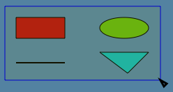
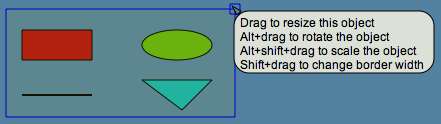

Lively Kernel Tutorial: (4) Selecting Multiple Objects Using the Selection Tray
Back to Introduction
PREVIOUS
Source code of this demo
NEXT
In order to allow multiple objects to be selected or manipulated
simultaneously, you can use a selection tray. A selection
tray is created by dragging the mouse (while keeping the mouse
button down) around the objects that you want to select.


Notes:
- Once a selection tray has been created, you can move the selected
objects by grabbing the background of the selection tray.
- You can manipulate the objects in the selection tray also
by utilizing the handles of the selection tray.
Try it yourself! Try selecting the four topmost objects and
moving them around.